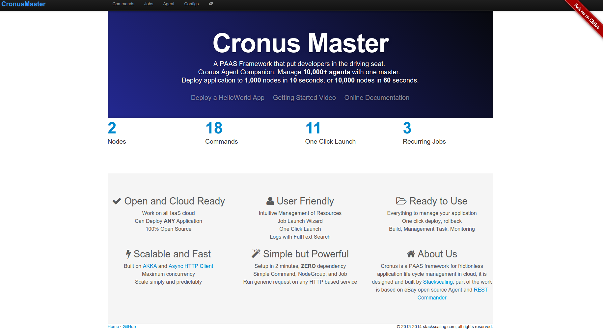

Introduction¶
Cronusmaster can execute any http(s) request against one or many target nodes. Think of it as a RESTful client that can run with predefined template on target node grammatically at scale. Cronusmaster is used to execute different tasks on cronus agent through its RESTful interface.
- Command: Defines a HTTP(S) request template
- Nodegroup: Defines a list of nodes that will be targets of a command
- Job: A command that runs on a nodegroup
- Scheduled Job: A command run on a nodegroup with a recurring schedule
- Log: Execution result and log of a job
To put cronusmaster to work
- Define HTTP(S) command template
- Define nodegroup with target node IPs or hostnames
- Execute materialized commmand on a nodegroup as a job
- Check result of the job in the log
- Optinoally create an oneclick launch from an already executed job
- Optionally create a recurring job from an already executed job or oneclick launch
cronusmaster main page
